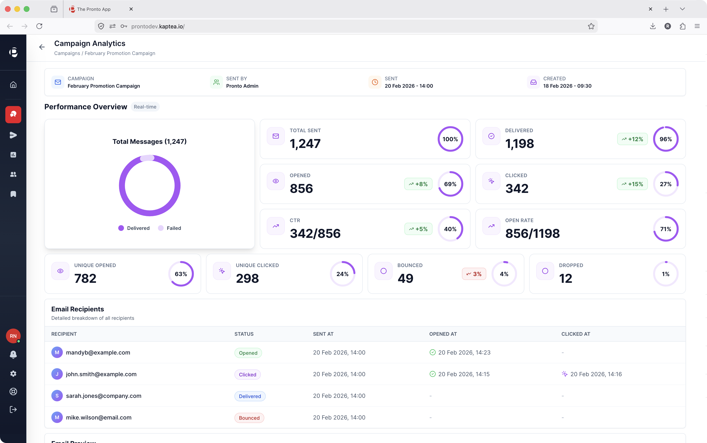
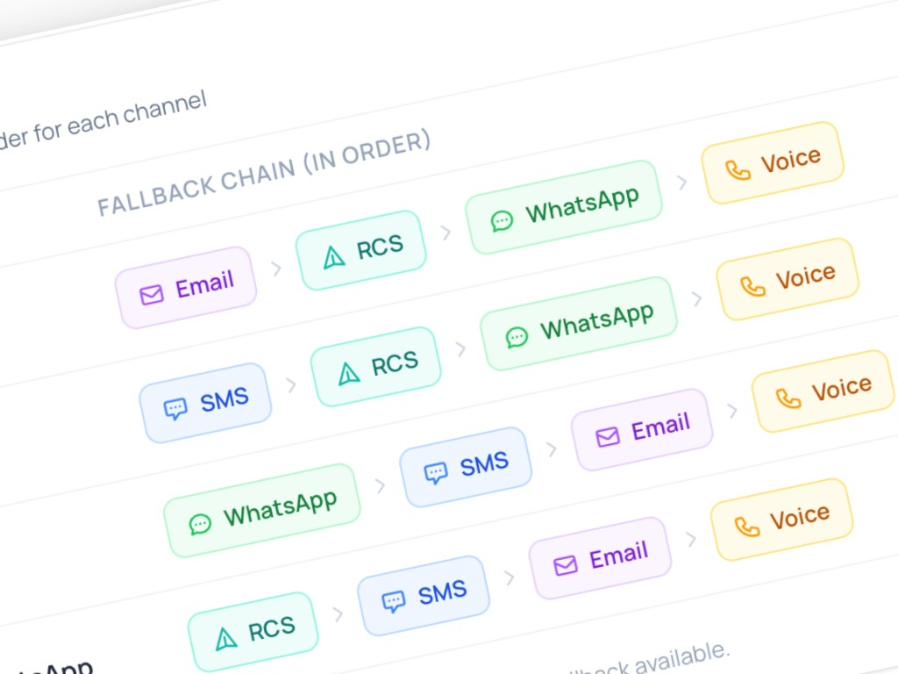

When it can't wait,
Pronto delivers.
The enterprise communications platform built for regulated industries. Carrier-grade infrastructure, compliance built in, full operational control - without waiting on engineering.

Sub-second delivery
Mission-critical messages reach their destination with automatic failover if the primary channel fails.
Enterprise governance
Role-based access, division segmentation, template controls, and a full audit trail on every message.
BYO carrier infrastructure
Bring your own Twilio or Telnyx account. Pronto adds the orchestration, governance, and ops layer on top.
Live in days
Connect your Twilio token, configure your channels, go live. No six-month build-outs.
From fragmented operations to governed control.
Most regulated organisations are stitching together carrier APIs, CRM exports, and manual ops processes with no safety net. Pronto replaces that entire stack.
One unified interface.
SMS & RCS
180+ countries, link tracking, sender ID management
Template approvals, two-way chat, rich media
Voice & IVR
Click-to-call, queue orchestration, call recording
HTML campaigns, open/click tracking, AI copilot
Secure Video
Encrypted video communications, built-in
Twilio Flex
Contact centre orchestration platform
Omni-Channel Communications
Five channels, one unified inbox. Two-way messaging, AI-assisted replies, and full cross-channel conversation history.
- Unified inbox across SMS, WhatsApp, Voice, Email, RCS
- Inbound & outbound orchestration
- Campaign wizard with A/B testing
- AI copilot for reply suggestions & composition
Control & Governance
Enterprise-grade access control, compliance enforcement, and audit trails that satisfy procurement and InfoSec teams.
- Role-based access (Superadmin, Admin, Ambassador)
- Division segmentation with scoped visibility
- Template governance with approval workflows
- Full audit log on every message & template change
Delivery & Resilience
Cross-channel failover, surge-proof routing, and real-time delivery diagnostics so no message is ever silently lost.
- Automatic SMS → WhatsApp → Email failover
- Load-aware routing for surge events
- Per-message delivery confirmation
- Event streaming to Slack, PagerDuty, Datadog
Integration & API Framework
16 pre-built integrations, bidirectional CRM sync, event-driven architecture, and open REST APIs for anything custom.
- Salesforce, Dynamics 365, HubSpot, Zoho, SAP
- Microsoft Teams & Slack channels
- Webhook, SQS, SNS, Kafka destinations
- Enterprise SSO (Okta, Azure AD, Google)
Deployment & Infrastructure
Dedicated single-tenant instances deployed in days, with EU, UK and US data residency with rapid go-live.
- Dedicated instance - not multi-tenant
- Connect your own Twilio or Telnyx token
- Cloud-managed on AWS & Azure
- EU, UK or US data residency
AI & Intelligence
AI-powered copilot for reply suggestions, content generation, analytics intelligence, and anomaly detection across all channels.
- AI reply suggestions & message composition
- Natural language analytics querying
- Content guardrails & compliance checking
- Anomaly detection & industry benchmarks
5
Integrated channels in one unified platform
180+
Countries reached via Twilio carrier network
16
Pre-built integrations including Salesforce, Dynamics & HubSpot
Days
Typical deployment time from contract to go-live
99.5%
Platform uptime SLA across dedicated instances
Unified orchestration - not just another inbox
Pronto doesn't just aggregate channels. It orchestrates them. Inbound messages from any channel are routed to the right agent based on skills, availability, and queue priority. Outbound campaigns are designed once and deployed across SMS, WhatsApp, Email, and RCS simultaneously - with per-channel content adaptation.
- Agent dashboard with real-time conversation routing
- Campaign wizard: choose channels, audience, content, schedule
- AI copilot suggests replies and drafts across all channels
- Full conversation history visible regardless of channel
Cross-channel failover - no message left behind
When an SMS doesn't arrive, Pronto automatically cascades to WhatsApp, then Email. You define the failover rules. The platform executes them in real time, with per-message delivery confirmation and event streaming to your monitoring stack.
- Define fallback chains: SMS → WhatsApp → Email
- Real-time delivery diagnostics per message
- Event streaming to Slack, PagerDuty, Datadog, Kafka
- Surge-proof routing handles storm-scale traffic spikes

Built for the industries where communications are mission-critical.
Pronto is designed for organisations where communications are not a nice-to-have - they're operationally critical. These are the industries where a dropped message has real consequences.
Storm-proof outage communications
When the grid goes down, your comms can't. Pronto handles 750× surge events with cross-channel failover across SMS, Voice IVR, and WhatsApp - without dropping a single escalation to field crews or customers.
- Outage notifications to affected customers in real time
- Field crew dispatch and status updates via SMS
- IVR queuing for inbound calls during peak storm events
- Automated restoration confirmations across all channels
Patient communications that can't fail
Appointment reminders, test results, and urgent patient notifications require compliance-grade delivery with full audit trails. Pronto handles high-volume healthcare messaging with GDPR compliance built in from day one.
- Appointment reminders with opt-in and opt-out management
- Test result notifications via secure, governed channels
- Mass emergency communications at national scale
- Division-scoped access for regional health boards
Real-time passenger and customer communications
Tolling, ticketing, and logistics organisations depend on millisecond-accurate customer messaging. Pronto orchestrates transactional communications at scale - from toll road notifications to last-mile delivery alerts.
- Toll and ticketing notifications with personalised data
- Delivery tracking alerts via SMS and WhatsApp
- Journey disruption communications across passenger services
- Two-way agent inbox for customer queries and escalations
Compliance-grade financial communications
Financial services organisations face the strictest communications compliance requirements. Pronto provides the audit trail, role-based controls, and governance workflows that procurement and InfoSec teams demand.
- Transaction alerts and fraud notifications via SMS and WhatsApp
- Template governance with approval workflows and change audit
- ISO 27001-certified infrastructure with GDPR Data Processor Agreement
- SSO integration with enterprise identity providers (Okta, Azure AD)
Salesforce
Bidirectional CRM sync
Microsoft Dynamics 365
Bidirectional CRM sync
HubSpot
Bidirectional CRM sync
Zoho CRM
Bidirectional CRM sync
SAP
Bidirectional CRM sync
Hivebrite
Member management
Microsoft Teams
Channel messaging
Slack
Channel notifications
Webhook
Event destinations
AWS SQS / SNS
Event streaming
Kafka
Event streaming
Datadog
Monitoring & alerting
PagerDuty
Incident management
Discord
Notifications
Google Chat
Notifications
Enterprise SSO
Okta, Azure AD, Google
Trusted by enterprises that can't afford to drop a message.
This is not a messaging project. It's an enterprise communications infrastructure decision.
National electricity grid operator - Utilities & Energy
Storm-proof IVR and SMS orchestration deployed and live in under 90 days.
750×
Surge in inbound call volume handled without dropped escalations during storm events
<90
Days from contract to full live deployment across voice, SMS, and IVR
25M+
Messages managed annually across Pronto enterprise customer deployments
1-2
Days to go live for standard deployments. Connect your Twilio token and configure.
Live in days, not months.
Pronto is designed to avoid messy, complex build-outs. You bring your Twilio or Telnyx account. We handle everything else. See how deployment works →
BUILT ON ENTERPRISE-GRADE CARRIER INFRASTRUCTURE
Questions about Pronto
See Pronto in action.
Book a 30-minute demo and we'll show you how Pronto handles your specific use case - your channels, your integrations, your compliance requirements.